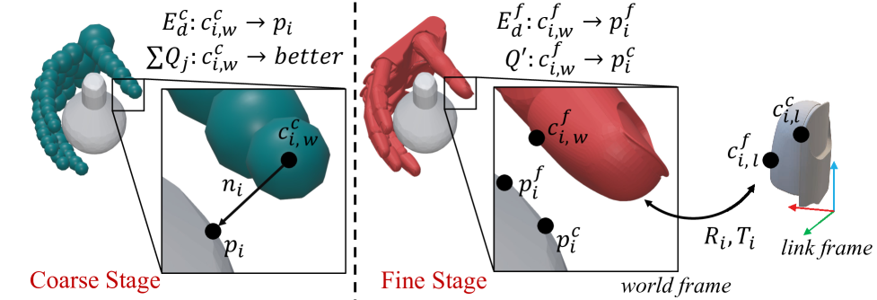
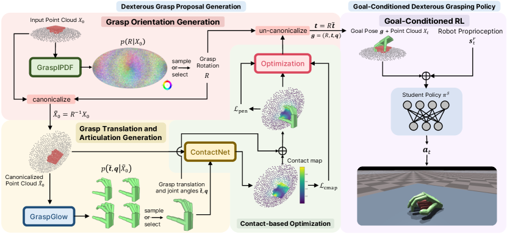
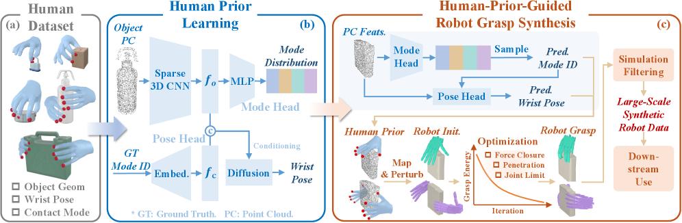

核心结论
抓取姿态生成不是 DexGen 的外围工具，而是 Anygrasp-to-Anygrasp RL 的状态空间定义器。生成数据的覆盖、质量和连通性，会直接决定策略能学会多少种手内操作。
Lightning Grasp
适合为每个物体快速铺满候选状态空间，且 XHand 已经接通。
BODex
力闭合定义更严格，并提供 pre-grasp 与六方向物理验证。
UniDexGrasp
将视觉抓取提案和 goal-conditioned RL 执行连接起来。
HUGS
为不同尺度和几何选择接触模式与腕部初始化，减少无效搜索。
为什么要专门介绍抓取姿态生成
DexterityGen 的核心预训练任务是 Anygrasp-to-Anygrasp：把物体从一个可行抓取状态移动到另一个可行抓取状态。每个抓取可写为：
训练时从抓取集合选择初始状态，再从邻近抓取选择目标状态；策略成功到达后继续切换目标。最终 rollout 覆盖旋转、平移、手指腾挪与接触切换，成为生成式低层控制器的数据。
抓取状态库
定义哪些 hand-object 状态是可行节点邻接目标
kNN / 拓扑配额形成难度适中的课程RL Rollout
把离散状态转换为连续动态操作轨迹生成器会决定 RL 学到什么
覆盖不足
如果只有少数包覆抓取，策略只会保持物体，无法学习旋转、重抓取和不同接触模式切换。
质量不足
如果节点本身穿透或不稳定，RL 初始化会频繁掉落，奖励信号被坏数据淹没。
连通性不足
即使每个节点都稳定，彼此之间若不可动态迁移，kNN 目标仍会制造不可完成任务。
Anygrasp-to-Anygrasp 对数据的特殊要求
| 维度 | 普通抓取数据集关注 | Anygrasp 数据额外要求 |
|---|---|---|
| 物理质量 | 能否抬起并保持物体 | 在多腕姿、重力方向和扰动下仍适合作为 RL 初始化 |
| 姿态多样性 | 同一物体有多个抓法 | 物体相对手的平移/旋转空间必须连续覆盖 |
| 接触拓扑 | 指尖接触或包覆抓取 | 需要不同活动手指数和手指组合，支持接触切换 |
| 局部密度 | 可独立使用的离散姿态 | 每个状态附近应有可达邻居，便于课程学习 |
| 边信息 | 通常没有 | 最好保存父子关系、状态差和动态可达标签 |
| 生成吞吐 | 足够训练视觉模型 | 多物体、多拓扑和稠密局部覆盖使规模需求更高 |
因此，生成器的最终验收不应停留在 |V|，而应继续测量有效边比例、图连通分量、平均最短路径和 RL 转移成功率。
四种方法代表的技术谱系
Lightning Grasp、BODex 与 HUGS主要解决离线高质量状态生成；UniDexGrasp还进一步研究如何用这些状态监督在线视觉提案，以及如何通过 goal-conditioned policy 执行目标抓取。比较时必须区分离线生成器与在线模型。
核心是把昂贵几何计算从搜索循环中解耦：预先构造手部 Contact Field，查询物体表面的可达接触域，再优化接触组合与关节姿态。

① 机器人侧预计算
将各 link 的表面、法向和可达关系压缩成接触场资产，使昂贵几何查询不必在每次抓取搜索中重复执行。
② 物体侧批量搜索
在候选物体放置上检测可达接触域，再组合并优化多指接触；中间结果可以缓存、复用和迭代扩展。
③ 可执行状态输出
接触目标经过 IK 与碰撞后处理，转成满足关节限位、物体碰撞和自碰撞约束的 hand-object 状态。
Contact Field
位置 + 法向的 6D 可接触空间，BVH 加速Contact Search
物体放置、接触域查询、接触点优化IK + Filter
运动学精修、物体碰撞与自碰撞后处理- 适合快速铺设大规模候选状态。
- 接触域可按 XHand link 明确定义，方便控制拓扑。
- 生成逻辑模块化，已成功接入 XHand 21 DoF。
- 能够围绕种子做接触保持局部扩展。
- 几何接触指标不是严格力闭合证明。
- 输出主要是状态，不含接近轨迹和迁移轨迹。
- 接触域与碰撞白名单依赖人工机器人配置。
- 新物体仍需 canonical space 与阈值复核。

把抓取质量写成双层优化：内层 QP 在摩擦锥约束下寻找最优接触力，外层梯度下降调整手掌与关节姿态，使其能够抵抗多个方向的目标 wrench。

① 粗阶段：先找可行区域
以手部碰撞球近似表面，快速计算接触点、法向和聚合关节梯度，用低成本搜索把手拉到物体附近。
② 细阶段：回到真实几何
候选进入局部收敛区后，改用精确网格距离与接触点，减少碰撞球近似造成的穿透和接触偏差。
③ 坐标变换支撑优化
接触点和法向通过 link 位姿映射到统一世界坐标，使根位姿、关节量和力闭合目标能够联合求梯度。
subject to fj,i ∈ friction cone；外层优化 x = [root pose, q]
工程实现
Coarse
碰撞球近似、cuRobo、300 次优化Fine / Pre-grasp
GJK 精确网格接触、保持 1 cm 距离Grasp + Squeeze
最终接触姿态、挤压目标与无碰轨迹论文统一 Allegro 基准中的结果；BODex 合成速度为 61.5 grasp/s，其他基线使用各论文速度，硬件与实现并非完全一致。
- QP 质量能量显式考虑摩擦与接触力组合。
- 六个重力方向严格物理验证适合 RL 初始化筛选。
- pre-grasp、grasp、squeeze 和无碰轨迹字段完善。
- 可将其能量用于 Lightning 候选二次评分。
- 需要人工指定各指尖 contact spheres。
- 论文抓取只使用指尖，不利用掌心接触。
- 未覆盖 clutter，抓取也不是 functional grasp。
- 移植 XHand 需接入 cuRobo、浮动基座和精确碰撞模型。
UniDexGrasp 不只是生成离线姿态，而是一个两阶段系统：从桌面点云生成多样目标抓取，再用视觉 goal-conditioned policy 从固定上方初始状态执行抓取。

① 分解高维抓取分布
GraspIPDF 先在 SO(3) 上采样根部旋转；点云 canonicalize 后，GraspGlow 再生成平移与手指关节角。
② 用接触一致性修复提案
ContactNet 预测物体接触图，测试时优化同时约束姿态概率与接触图一致性，把采样结果推向更可靠的目标抓取。
③ 目标条件策略负责执行
右侧策略接收目标手姿与当前点云，通过机器人本体状态融合和 teacher-to-student 学习，输出连续控制动作。
GraspIPDF
在 SO(3) 上建模手根旋转分布GraspGlow + ContactNet
生成平移与关节角，并用接触图做 TTA 修复Goal-conditioned RL
oracle teacher + DAgger 视觉 student 执行目标抓取离线数据集
- 1.12M 个有效 Shadow Hand 抓取；
- 5,519 个物体实例、133 个类别，包含已见类别新实例和未见类别；
- 每个物体做 1,000 次生成，单次采用 6,000 步能量优化；
- 在 Isaac Gym 中验证六个轴向重力，并过滤超过 1 mm 的穿透。
对 Anygrasp 的启发与区别
- 旋转与平移/关节角分解可缓解高维分布学习困难。
- Normalizing Flow 比 CVAE 更能保留多模态抓取。
- 目标条件策略对不完美目标具有一定纠错能力。
- State canonicalization 和 object curriculum 对跨物体训练关键。
- 它解决桌面接近与抬起，而非在手中任意抓取迁移。
- 执行从固定上方张开姿态开始，不覆盖任意初始抓取。
- 数据生成采用 6,000 步能量优化，吞吐不适合 XHand 快速铺点。
- 只研究刚性物体，functional grasp 仍有限。
不直接把人手姿态重定向给机器人，而是从少量人类抓取学习物体条件的接触模式与腕部初始化先验，再交给机器人专属的力闭合优化完成物理适配。

① 学习人类高层先验
稀疏 3D 编码器提取物体几何；Mode Head 学接触模式分布，条件 diffusion 的 Pose Head 学对应腕部姿态分布。
② 为新物体提出搜索种子
预测接触模式并采样腕姿，再将人类接触模式映射、扰动成不同机器人手型的初始化，避免全空间盲搜。
③ 物理优化与规模化筛选
机器人专属优化最小化抓取能量并满足力闭合、穿透和关节限位，仿真过滤后得到可用于下游训练的数据。
Single-Two
单手两指，小尺寸、接触面积有限。
Single-Three
单手三指，摩擦点接触下的基本力闭合模式。
Single-Full
单手全指，适合更大可接触表面。
Both-Full
双手全指，面向大尺度物体。
从 1.8K 人类抓取到 3.2M 机器人抓取
HUGS-Human
304 物体、525 放置、1.8K 人类抓取Object-conditioned Prior
模式分类头 + 条件 diffusion 腕姿分布Robot Optimization
按模式分配预算，力闭合与可行性优化- 可学习“什么物体适合几指抓取”，替代固定 2:5:3 全局比例。
- 腕部初始化先验可提高有效生成率并减少反手等不自然姿态。
- 人类先验只做高层引导，仍由 XHand 优化器保证物理可行。
- 对同一物体保留多模式，适合后续接触拓扑切换。
- 人类数据较小，远分布物体先验可能退化。
- 四种粗模式不能覆盖完整 functional grasp 语义。
- 在线生成器仍弱于离线优化，受深度与标定误差影响。
- 重点是桌面跨尺度和双手，不是手内抓取流形连通性。
横向比较：没有单一方法覆盖全部需求
| 维度 | Lightning Grasp | BODex | UniDexGrasp | HUGS |
|---|---|---|---|---|
| 核心范式 | Contact Field 程序化搜索 | 双层 QP + 梯度优化 | 离线能量优化 + 学习提案/执行 | 人类先验 + 力闭合优化 |
| 主要目标 | 高速、多样、跨手型生成 | 高质量力闭合与可复现基准 | 点云下通用抓取和执行 | 跨尺度、跨接触模式生成 |
| 质量依据 | 接触、法向、碰撞与后处理 | 摩擦锥 QP、MuJoCo 六方向验证 | DFC 类能量、Isaac 六方向验证 | 人类先验、力闭合与物理验证 |
| 接触模式 | 由 robot contact field 配置 | 人工指定指尖 contact spheres | 数据中隐式学习，主要 Shadow 全手 | 显式两指/三指/全指/双手 |
| 已展示手型 | 多种手；本项目已接 XHand | Shadow / Allegro / LEAP | Shadow Hand | Shadow / LEAP，单手与双手 |
| 公开规模 | 方法侧重在线吞吐 | 4.09M floating + 3.08M tabletop | 1.12M / 5,519 物体 | 3.2M / 157K scenes |
| pre-grasp/轨迹 | 无；本项目另做局部扩展 | 有 pre-grasp、squeeze 和无碰轨迹 | 有 goal-conditioned 执行策略 | 蒸馏模型预测 pregrasp/grasp/squeeze |
| Anygrasp 适配 | 高：当前主生成器 | 中：质量增强和验证 | 中：执行与学习框架参考 | 中高：拓扑和腕姿先验 |
推荐组合方案：把四种方法放在正确层级
最适合 XHand Anygrasp-to-Anygrasp 的路线不是替换 Lightning Grasp，而是在其前后增加“高层模式先验”和“严格物理质量层”。
组合方案的核心收益
覆盖和质量解耦
Lightning 负责便宜地提出大量候选，QP 和仿真只对筛选后的候选投入高成本。
全局模式与局部流形解耦
HUGS-style prior 决定应该搜索哪类拓扑和腕姿，局部扩展负责把状态空间铺密。
状态和动作解耦
生成器构建可信节点，动态验证构建边，RL rollout 才成为真正的控制训练数据。
XHand 落地路线图
P0｜先验证现有 5,548 节点图
在 IsaacLab 中按同拓扑、异拓扑和位姿邻近三类边抽样训练/执行局部策略，统计动态可达率。没有这一步，继续增加节点数量的收益无法判断。
P0｜扩展到多物体并建立统一协议
选择球形、细长工具、扁平物体和不规则物体；每个物体保存 mesh 哈希、尺度、生成参数、质量分布和筛选结果。
P1｜引入 BODex-style 力闭合评分
先作为离线 reranker，不立即重写生成器。比较 QP 分数与 IsaacLab 稳定性的相关性，再决定是否用于局部精修。
P1｜学习 XHand 接触拓扑与腕姿先验
利用人类小规模数据、现有成功抓取或二者结合，预测 3/4/5 接触和具体手指掩码，将固定全局比例升级为物体条件分配。
P2｜训练在线点云抓取提案
借鉴 UniDexGrasp 的旋转分解、Flow/Diffusion 和 ContactNet，使用 XHand 离线数据监督从部分点云生成候选。
P2｜形成 Anygrasp-to-Anygrasp 轨迹库
以动态图边做 curriculum，训练目标条件策略并持续回写边成功率，最终为 DexGen 类动作先验提供 rollout。
评测与验收：从姿态数量升级到图和轨迹
- 多方向稳定成功率
- 最大穿透与自穿透
- 接触距离一致性
- 力闭合/QP 分数
- 物体位姿和关节覆盖
- 有效动态边比例
- 同/异拓扑边成功率
- 最大连通分量占比
- 节点度和孤立点比例
- 状态距离与可达性相关性
- 目标抓取到达率
- 连续切换目标数量
- Time-to-fall
- 单位 GPU 小时成功 rollout
- DexGen 辅助遥操作增益
结论与技术选择
- Lightning Grasp 仍是当前 XHand 主线的正确选择。它已经接入且吞吐高，适合 Anygrasp 状态空间覆盖。
- BODex 最值得借鉴的是质量层，而非立即替换生成层。先验证 QP 分数对 IsaacLab 稳定性的增益。
- UniDexGrasp 的关键价值在“数据 → 在线提案 → 目标执行”链路。但它的桌面抓取执行不是 Anygrasp-to-Anygrasp。
- HUGS 指出了下一步提升多样性的方向。用物体条件先验选择接触拓扑和腕姿，比固定比例与随机初始化更合理。
- 真正的数据产品应包含 V、E 和 τ。稳定抓取节点只是第一层，动态可达边和成功迁移轨迹才直接服务 DexGen。
论文来源
- Lightning Grasp: High Performance Procedural Grasp Synthesis with Contact Fields
- BODex: Scalable and Efficient Robotic Dexterous Grasp Synthesis Using Bilevel Optimization
- UniDexGrasp: Universal Robotic Dexterous Grasping via Learning Diverse Proposal Generation and Goal-Conditioned Policy
- HUGS: Guiding Unified Dexterous Grasp Synthesis Across Modes and Scales via Learned Human Priors
- DexterityGen: Foundation Controller for Unprecedented Dexterity
数据与指标均以论文当前 arXiv 版本和本项目现有 XHand 结果为依据。跨论文硬件、物体集、仿真器和成功定义不同，报告避免做未经统一基准的绝对性能排名。